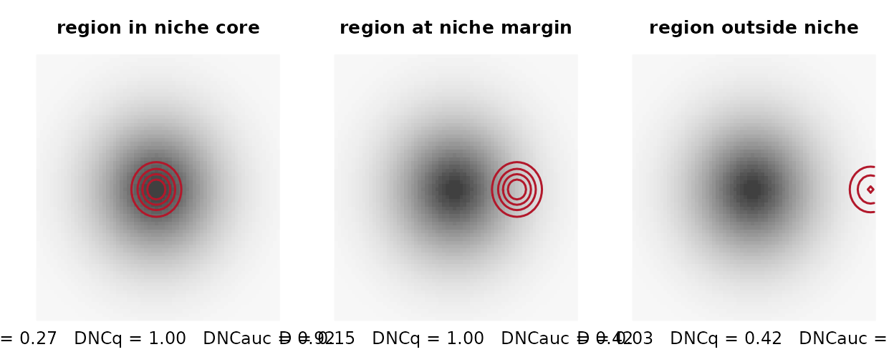
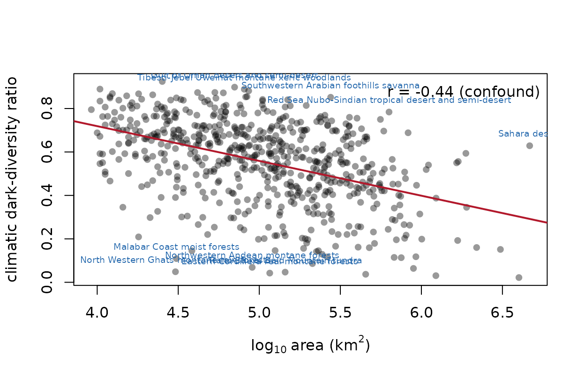

Climatic dark diversity with darkniche: a quickstart
Source:vignettes/darkniche-quickstart.Rmd
darkniche-quickstart.Rmd1. Why direction matters
Climatic admissibility is a containment question — does the region’s climate lie inside the species’ tolerance? — not a similarity question. Symmetric overlap statistics penalise niche mass lying outside the region, so a broad-niched species scores near zero against a small region it could trivially occupy.
sp <- dn_space(cbind(rnorm(5000, 0, 2), rnorm(5000, 0, 2)), R = 70)
broad <- dn_density(cbind(rnorm(2000, 0, 1.6), rnorm(2000, 0, 1.6)), sp)
region <- dn_density(cbind(rnorm(500, 0, 0.25), rnorm(500, 0, 0.25)), sp)
m <- dn_metrics(rbind(as.numeric(broad)), rbind(as.numeric(region)))
round(c(D = m$D, I = m$I, DNC_q = m$DNC_q, DNC_auc = m$DNC_auc), 3)
#> D I DNC_q DNC_auc
#> 0.192 0.431 1.000 0.923D is low; the directional forms are high. The region is
habitable throughout, and only the directional family says so.
dn_plot_containment(R = 70)
The algebraic reason is checked in the package’s own test suite: over unit-mass densities the min-overlap functional is identically Schoener’s D, so no symmetric statistic can be rescaled into a containment measure.
all.equal(as.numeric(m$DNC_min), as.numeric(m$D))
#> [1] TRUE2. The workflow on your own data
# 1. one lattice from the global background (e.g. two climate PCs)
sp <- dn_space(global_scores, R = 100)
# 2. one density per species and per region, same bandwidth for all
Zs <- dn_density(species_scores, sp)
Ze <- dn_density(region_scores, sp)
# 3. the metric block
m <- dn_metrics(Zs_matrix, Ze_matrix, q = 0.95)
# 4. null screens
Zg <- dn_density(global_scores, sp)
nul <- dn_null_shift(Zs, Ze_matrix, Zg, B = 499)
dn_null_summary(m$DNC_auc, nul)
# 5. calibrate the admissibility threshold on documented introductions
neg <- dn_match(positives, regions, reached)
thr <- dn_calibrate(scores, labels)
# 6. classify
pairs <- dn_dark(pair_table, p_min = thr, ses_cols = c("n1_ses", "n2_ses"))The package ships no range polygons or rasters — those are your inputs (IUCN, BirdLife, WWF, WorldClim). What it does ship is real published output.
3. The bundled global results
eco <- dn_data("ecoregion")
str(eco)
#> 'data.frame': 619 obs. of 5 variables:
#> $ region : chr "Sinaloan dry forests" "Everglades" "Veracruz moist forests" "Hispaniolan moist forests" ...
#> $ n_obs : int 864 267 1051 277 302 1177 874 553 1532 1802 ...
#> $ n_dark : int 1651 1684 1350 1267 1382 2020 1363 1652 793 958 ...
#> $ cddr : num 0.656 0.863 0.562 0.821 0.821 ...
#> $ area_km2: num 93200 22000 92800 49600 23600 ...
dn_data("auc")
#> metric n n_pos auc se lo hi
#> 1 DNC_q 18899 3480 0.7049489 0.004504626 0.6961200 0.7137778
#> 2 DNC_auc 18899 3480 0.7022837 0.004324280 0.6938083 0.7107591
#> 3 DNC_min 18899 3480 0.6883640 0.004339415 0.6798589 0.6968691
#> 4 NSI_q 18899 3480 0.6833160 0.004325208 0.6748388 0.6917933
#> 5 CFI 18899 3480 0.6974737 0.004457697 0.6887367 0.7062106
#> 6 CFI_w 18899 3480 0.7006914 0.004426512 0.6920156 0.7093672
#> 7 NOV 18899 3480 0.2855750 0.004264521 0.2772167 0.2939333
#> 8 D 18899 3480 0.6883598 0.004339569 0.6798544 0.6968652
#> 9 I 18899 3480 0.6946552 0.004308862 0.6862100 0.7031005
#> 10 BC 18899 3480 0.6946552 0.004308862 0.6862100 0.7031005dn_report() assembles the quantities a region-level
study must report together.
rep <- dn_report(eco, dn_data("sweep"))
rep
#> Climatic dark-diversity report
#> regions: 619
#> CDDR: 0.022 - 0.924 (median 0.579)
#> area confound: r = -0.441 -- rank on the residual, never on raw CDDR
#> 286 regions move more than 10% of the ranking when area is removed
#> threshold sweep: 439 of 452 regions (97%) change direction
#> direction census by threshold:
#> quantile n_enriched n_depleted
#> 0.80 71 548
#> 0.90 344 275
#> 0.95 520 81
#> 0.99 449 3
#> ** a single-threshold enrichment claim is not supportable here **Note what the printed report insists on.
4. Guardrail 1 — never rank on the raw ratio
A small region occupies little environmental space, so more niches enclose it, while its smaller area supports fewer natives. Both inflate the raw ratio for reasons unrelated to the ecology of interest.
x <- dn_cddr(eco$n_dark, eco$n_obs, eco$area_km2)
attr(x, "confound_r")
#> [1] -0.4407015
# the residual is orthogonal to area by construction
round(cor(x$cddr_residual, log10(eco$area_km2)), 12)
#> [1] 0
dn_plot_cddr_area(x, eco$area_km2, labels = eco$region)
5. Guardrail 2 — check the threshold before claiming a direction
The region-level test counts species above a threshold and compares that count with its Poisson-binomial expectation under the null. Results whose expected count falls below five are not reported at all:
obs <- c(rbeta(300, 0.3, 5), rbeta(100, 9, 1.1))
mu <- rbeta(400, 2.5, 2.5); sdv <- 0.18 + 0.06 * runif(400)
dn_aggregate(obs, mu, sdv, threshold = quantile(obs, 0.95))
#> n_species n_admissible_obs expected sd ses p enrichment
#> 1 400 20 19.5729 3.981904 0.1072604 0.4572912 1.021821
#> reliable
#> 1 TRUEAnd the direction of that verdict is often a property of the threshold rather than of the region:
sw <- dn_sweep(obs, mu, sdv)
sw
#> Threshold sweep of the aggregate null test
#> thresholds: q0.80 - q0.99 (20 points)
#> obs/expected ratio: 0.235 - 1.699
#> ** DIRECTION REVERSES across the sweep: a single-threshold
#> verdict for this region is an artefact of the threshold. **
plot(sw)Across all 619 bundled ecoregions:
cen <- dn_direction_census(dn_data("sweep"))
cen$census
#> quantile n_enriched n_depleted
#> 1 0.80 71 548
#> 2 0.90 344 275
#> 3 0.95 520 81
#> 4 0.99 449 3
sprintf("%d of %d reliably testable ecoregions change direction (%.0f%%)",
cen$n_changed, cen$n_regions, 100 * cen$frac_changed)
#> [1] "439 of 452 reliably testable ecoregions change direction (97%)"The same data support opposite worldwide conclusions depending on where the threshold is put. Report the sweep, not a single value.
6. Figures and tables for a paper
ext <- dn_table_extremes(eco$region, x, n_obs = eco$n_obs,
n_dark = eco$n_dark, n = 5)
head(ext, 5)
#> region cddr residual
#> 444 Southwestern Arabian foothills savanna 0.8518351 0.3635856
#> 376 Red Sea Nubo-Sindian tropical desert and semi-desert 0.7838773 0.3532864
#> 419 Sahara desert 0.6287016 0.3370001
#> 276 Tibesti-Jebel Uweinat montane xeric woodlands 0.8887833 0.3152269
#> 438 Gulf of Oman desert and semi-desert 0.8983205 0.3151845
#> n_obs n_dark
#> 444 327 1880
#> 376 437 1585
#> 419 489 828
#> 276 117 935
#> 438 224 1979dn_table_export() writes any table to CSV, Markdown or
LaTeX, and dn_plot_matrix(),
dn_plot_sources(), dn_plot_roc() and
dn_plot_sweeps() cover the remaining figure types. The
scripts in analysis/ regenerate every figure and table of
the software paper.